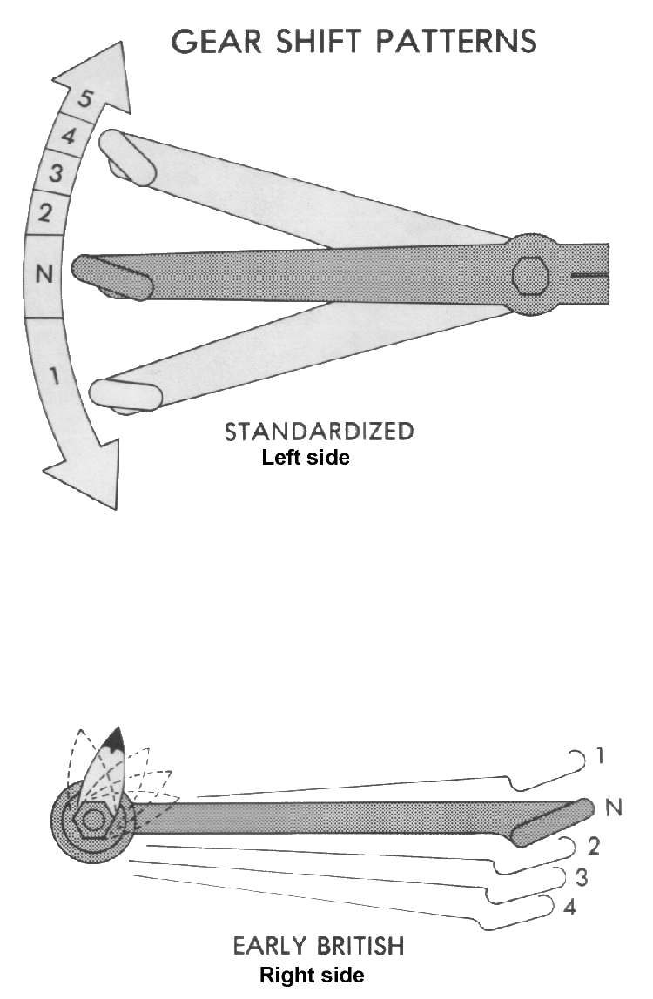
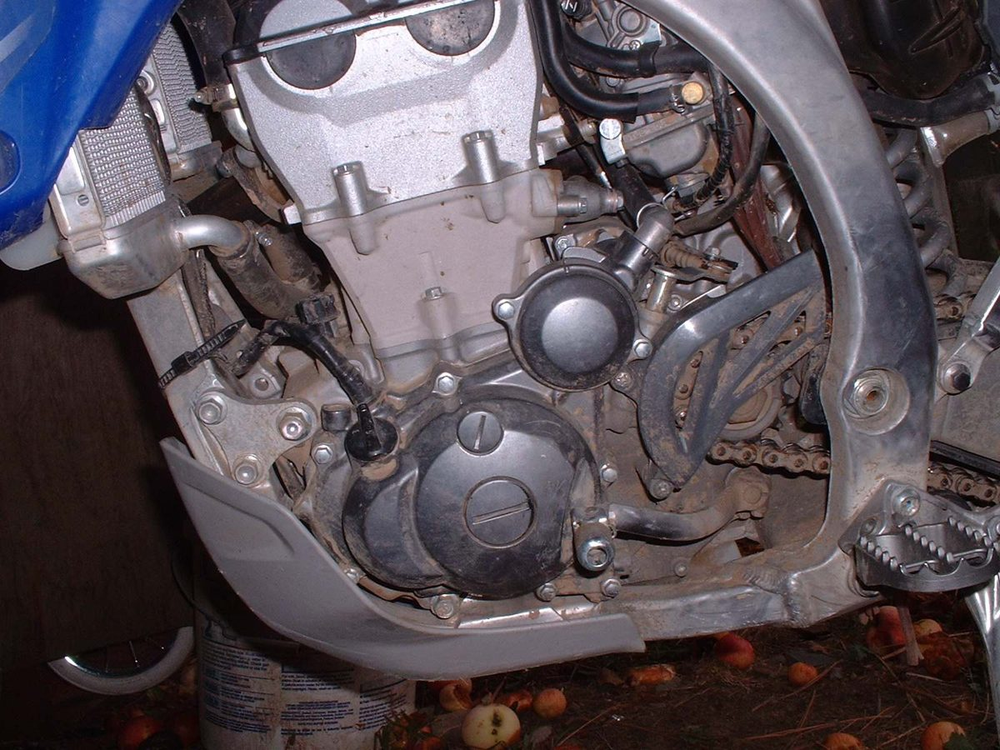

Home mechanic (basic tools) · Time: 15 to 30 min (estimate)
A gear lever that slips on its shaft, is bent after a fall, or sits in the wrong place stops you selecting gears fully. That causes false neutrals and can make the bike jump out of gear. Refitting it correctly on the spline, or fitting a new lever, is a simple job. If the teeth on the engine's spindle (not the lever) are worn, the spindle needs replacing in a workshop.
Safety
- Engine off, bike on the centre stand or held upright.
- Do not ride with a loose lever. If it falls off you cannot change gear.
- Do not heat or hammer a bent cast lever straight. Cast metal cracks and can snap later.
You need
- Spanner or socket for the clamp bolt.
- A punch or paint pen to mark the position.
- A new lever if the old one is bent, cracked or its splines are worn. Match the part to your model; heel-and-toe pedals on step-throughs are model-specific.
Steps
- Before removing anything, mark a line across the end of the spindle and the lever, or take a photo, so you can refit in the same position.
- Undo the clamp bolt and remove it completely. On most levers the bolt passes through a groove in the spindle, so the lever cannot come off with the bolt in place.
- Do not force a screwdriver into the slot to spread it; this cracks the lever. Wiggle the lever off, or tap it gently from behind with a soft mallet.
- Clean both sets of splines with a wire brush. Look at the spindle teeth. If they are rounded or chewed, stop: the spindle needs a workshop (Assess internal gearbox faults).
- Look at the lever splines and body. If the splines are worn or the lever is bent or cracked, fit a new lever.
- Slide the lever on so its tip sits just below the top of your boot with your foot on the peg. Use your mark as a start. Check it does not touch the engine case at the bottom of its travel.
- Refit the clamp bolt through the groove and tighten it firmly to the torque in your manual.
- On a linkage type, also check the rod length and ball joints, and grease the pedal pivot (Check the gear lever and shift linkage).
Check your work
- The lever cannot move on the spindle without the spindle moving.
- It moves its full stroke up and down and springs back to centre.
- With the engine off and the rear wheel turned by hand, every gear and neutral selects cleanly.
If it did not fix the problem
- Lever is tight but does not spring back: Gear lever does not spring back.
- Still finding false neutrals: Finds false neutrals between gears.
- The bike was dropped: check the rest of it too, The bike has been dropped or crashed.